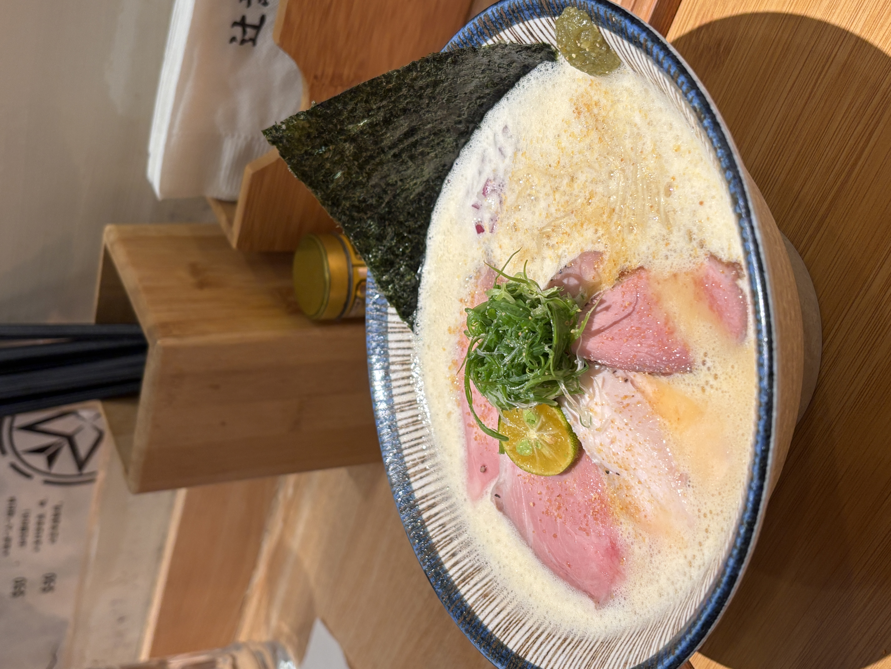

數寄屋 辻葉位於大安區在泰順街上，算是台北蠻有名的拉麵，店面容納約10-15人，用餐時間需要等待的時間比較久一點！店內走比較偏白色系的風格，環境非常乾淨明亮，用餐整體氛圍很舒服。

數寄屋 辻葉，對於有選擇困難症的人非常友善，因為拉麵湯頭只有兩種選擇，分成清湯、濃湯，搭配的配料都是叉燒、鴨胸和舒肥雞，但是兩者的湯頭風味相差蠻多。
清湯的部分，是柚子塩鷄白湯，柚子鹽的味道蠻突出的，加上一開始店家會放入金桔，所以整體果香味比較重。 濃湯的部分，是泡系雞白湯，奶香味十足，上面的泡沫也很綿密細緻！ 兩者都可以先吃原味，再加上旁邊的柚子胡椒（這個味道有一點吃不懂哈哈哈）跟金桔，讓湯頭重獲新生～建議可以兩個人一起去吃，一個人點清湯一個點白湯，吃起來剛剛好！
我覺得整體吃下來是一家吃完覺得很清爽，不會很有負擔的拉麵店，而且店員的服務態度很好、用餐環境很舒服，雖然是開放式餐廳，但是吃完衣服不會有味道，推薦給大家～
*數寄屋 辻葉的麵體偏硬，所以喜歡吃正常硬度的朋友可以選擇偏軟。
*可以免費加ㄧ球或是半球麵